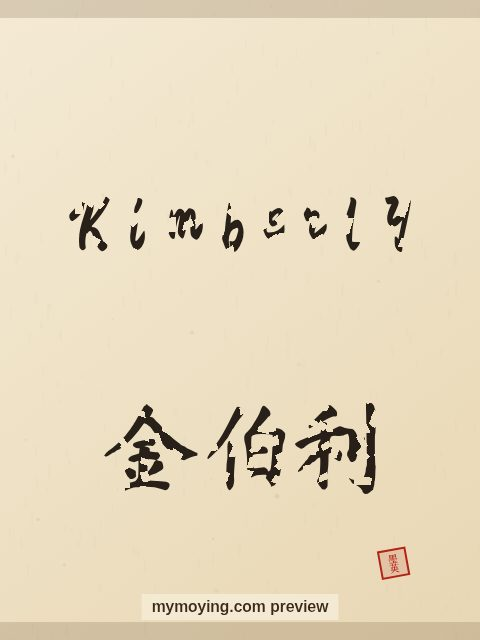

Kimberly in Chinese Calligraphy
Here is Kimberly in Chinese calligraphy — the English letters drawn in brush style, plus the Chinese form 金伯利.

Sample. “Kimberly” in the Regular (楷书) brush style with the Chinese name 金伯利 (Jīn bó lì). The paid file removes the watermark.
The Chinese characters for Kimberly
As a transliteration, Kimberly is usually written 金伯利 (Jīn bó lì). Each character is listed below with its own dictionary meaning — the name is chosen by sound, not by meaning, and Moying does not translate names. Please have a person review the characters before any permanent use such as a tattoo.
Origin and meaning
The name Kimberly has English roots and means “royal fortress meadow”.
About the name Kimberly
A place name from South Africa that became a top US pick in the 1960s.
As a gift or a tattoo
If you are choosing a name for a print or a tattoo, Kimberly carries the meaning “royal fortress meadow” and looks striking in brush strokes.
Open Kimberly in the generatorFree watermarked preview. $1.99 once for a clean high-resolution download of this name in every style and setting. No subscription. Digital product, delivered instantly; see Terms.